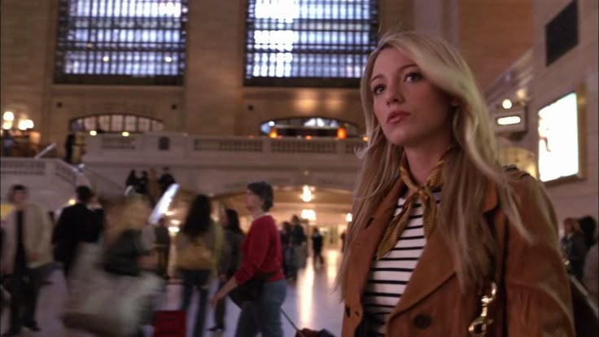
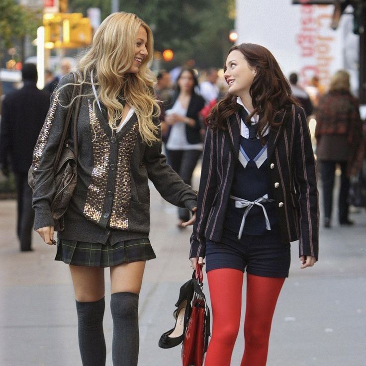

Ep1 S1 · Pilot
El regreso de Serena a Grand Central y el nacimiento de Gossip Girl.
THE STORY THROUGH THE SEASONS

SEASON 01
Serena van der Woodsen vuelve al Upper East Side después de haber estado fuera de Nueva York. Su regreso cambia la dinámica del grupo y hace que los secretos comiencen a salir a la luz.